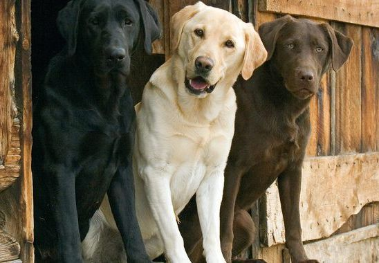

Интересные факты
- Почему собаки называются «лабрадорами»? Есть три версии, отвечающие на этот вопрос. По одной из
них порода своим названием обязана полуострову Лабрадор, на котором были выведены собаки. По второй версии породу
назвали так из-за черного окраса, напоминающего скальную породу «лабрадорит». А третья версия гласит о том, что
собак так назвали португальцы, пораженные их рабочими качествами: с португальского «лабрадор» означает «труженик».
- Японские ученые доказали, что лабрадоры могут диагностировать у людей рак на ранней стадии.
- Лабрадоры так обожают плавать, что могут радостно сигануть в озеро или реку с высокого берега. Оторопевшим хозяевам
останется придумывать, как вытащить наплававшуюся собаку.
- Лабрадоры очень хорошо плавают. Скорость их плавания равна скорости ходьбы человека.
- Первые лабрадоры были черными. Только в конце 19 века в помете абсолютно черных родителей появилось несколько
палевых щенков.
- Доказано, что нюх лабрадора на 25% острее нюха немецкой овчарки. Известный лабрадор по кличке Йоги из Великобритании
обнаружил 490 грузов с наркотическими веществами и получил Золотую Рыцарскую медаль за свои заслуги.
